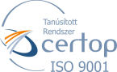
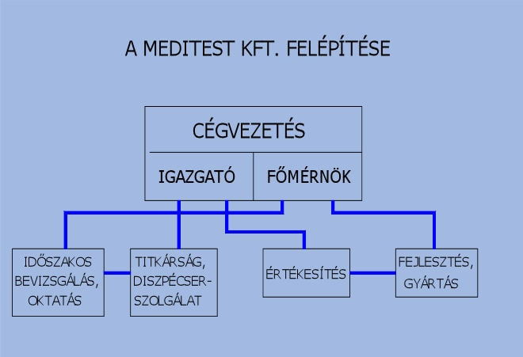
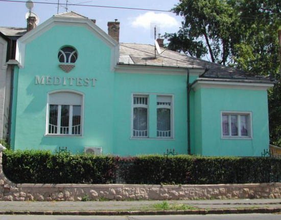

A MEDITEST KFT. 1989-ben alakult.
Szakmai elődje a Semmelweis Orvostudományi Egyetem Orvostechnikai- és Innovációs Tanszéki Csoport, továbbá a MEDICOR Minőségbiztosítási Főmérnökség.
Ezen intézmények tevékenysége adta meg az alapot a megfelelő szakmai felkészültséghez, melynek megszervezése és működtetése a vállalat igazgatójának nevéhez fűződik.
Két évtizedes működésünk alatt bebizonyosodott, hogy a szakmai célok átgondolt megválasztása biztosítja a vállalat működőképességét hosszú távon.
Vállalatunk rendelkezik MSZ EN ISO 9001:2009 minőségbiztosítási tanusítvánnyal.

A Vállalat alaptevékenysége két szegmensre oszlik:

Orvostechnikai eszközök, berendezések biztonságtechnikai és alkalmazástechnikai vizsgálata, az Egészségügyi Minisztérium kijelölése alapján.
A Semmelweis Orvostudományi Egyetemmel együtt kifejlesztett és szabadalmaztatott automata mikrohullámú szövetmegmunkáló berendezés továbbfejlesztése és gyártása, mely nagymértékben lerövidíti a munkát, lényegesen takarékosabban és gazdaságosabban működik.
Vállalatunk működési felépítéséből egyértelműen látható, hogy az előzőekben említett két fő tevékenység határozottan elválik egymástól, mivel vállalatunk irányítási rendszere az egymástól független működésre van felépítve.
Vállalatunk technikailag folyamatosan alkalmazkodik az igényekhez, bevizsgáló eszközeinket évről-évre korszerűsítjük, melyek lehetővé teszik a legmodernebb berendezések szakszerű bevizsgálását a legújabb szabványok alapján.
A fejlesztésben és a gyártásban szintén figyelembe vesszük az egészségügy területén felmerülő igényeket, leginkább a pathologia vonatkozásában, ahol mind jobban igyekszünk olyan berendezéseket fejleszteni és gyártani, melyek az eddigiektől lényegesen gazdaságosabban működnek, és környezetvédelem szempontjából az előírásoknak megfelelnek.
